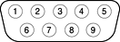

The Xserve has an RS-232-compatible serial port for connecting a terminal, using a standard DB-9 plug. Figure 3-3 shows the mechanical arrangement of the pins on the serial port connector; Table 3-5 shows the signal assignments.
The serial ports includes a GPi (general-purpose input) signal on pin 7. The GPi signal connects to the data carrier detect input on the SCC (Serial Communications Controller). Alternatively, the GPi line can be connected to the receive/transmit clock (RTxCA) signal on the SCC. That connection supports devices that provide separate transmit and receive data clocks, such as synchronous modems.
Figure 3-3 Serial port connector
